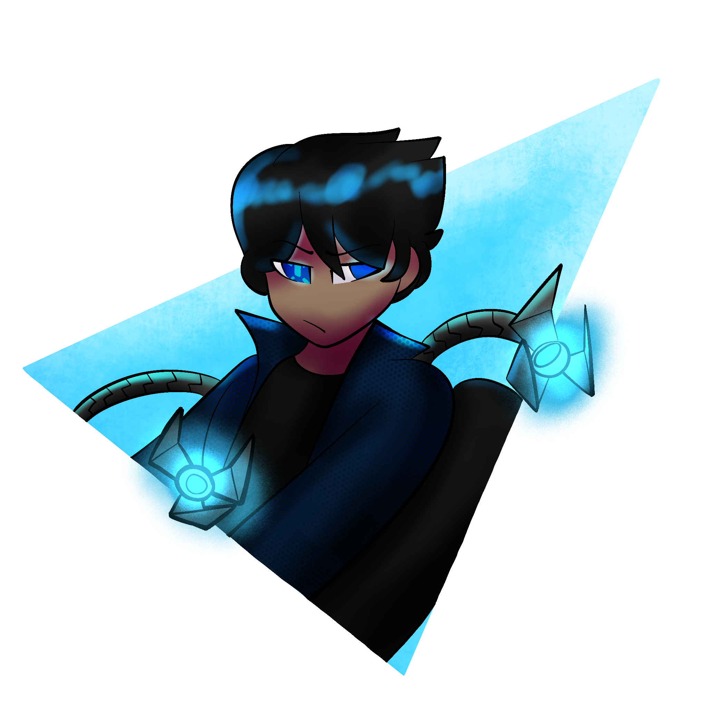
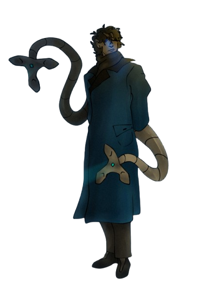

Hi! I'm Gadget. Sometimes called Gadget Gooner Gaming. I'm an online douchbag with a tendency to make one too many jokes! I do many things! I edit and create videos professionally and personally, I do way too much Roleplay in games like Minecraft or DND. I do Improv, VR, and have 6000 hours in Gmod. Basically, I have problems. If this sounds good to you, maybe I can be your problem too!
Custom Player Models



